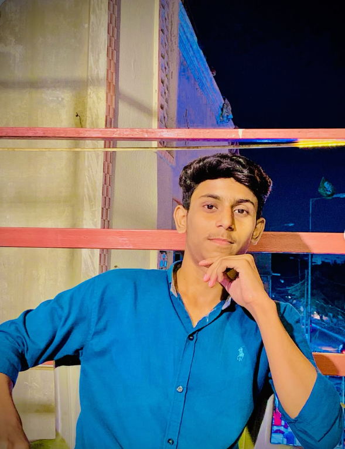

I'm a passionate Full-Stack web developer with hands-on
experience in building web applications
using React.js &
Next.js
with TypeScript, TailwindCSS, and Prisma
Currently available for freelance
My name is Syed Ali Akhtar, a Intermediate Pass Student at D.J Sindh Govt COllege of
Pakistan.
I am
also a passionate Student in the Saylani Mass IT Training Program,
where I Gain my Experience and skills.
Currently, my focus is on learning my skill
on Modern Web Devlopment and Cyber Security.
Here are a few Languages I’ve been working with
I'm a Profession Graphic Designer, i'm expert in manuall Vector Tracing
I've an Experience of almost 2
years in manuall vector Tracing.
